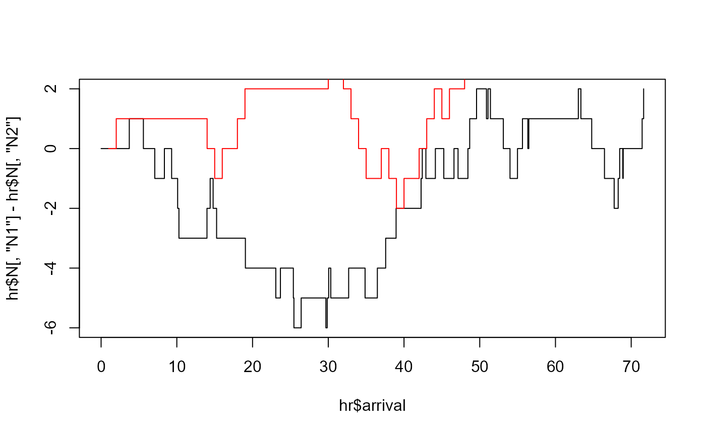

Estimate exponential Hawkes model parameters by maximum likelihood.
The supplied hspec-class object defines the model and the starting
values for optimization with maxLik.
Usage
hfit(
object,
inter_arrival = NULL,
type = NULL,
mark = NULL,
N = NULL,
Nc = NULL,
lambda_component0 = NULL,
N0 = NULL,
mylogLik = NULL,
reduced = TRUE,
grad = NULL,
hess = NULL,
constraints = NULL,
method = "BFGS",
verbose = FALSE,
...,
Nc0 = NULL,
final_hessian = c("maxLik", "stable"),
gradient = c("numeric", "analytic"),
jacobian = NULL
)
# S4 method for class 'hspec'
hfit(
object,
inter_arrival = NULL,
type = NULL,
mark = NULL,
N = NULL,
Nc = NULL,
lambda_component0 = NULL,
N0 = NULL,
mylogLik = NULL,
reduced = TRUE,
grad = NULL,
hess = NULL,
constraints = NULL,
method = "BFGS",
verbose = FALSE,
...,
Nc0 = NULL,
final_hessian = c("maxLik", "stable"),
gradient = c("numeric", "analytic"),
jacobian = NULL
)Arguments
- object
An
hspec-classobject containing the parameter values.- inter_arrival
A vector of inter-arrival times for events across all dimensions, starting with zero.
- type
A vector indicating the dimensions, represented by numbers like 1, 2, 3, etc., starting with zero.
- mark
A vector of mark (jump) sizes, starting with zero.
- N
Optional cumulative event-count matrix, with one row per input row and one column per event type. Each row contains counts after that event.
- Nc
Optional cumulative mark-total matrix with the same shape as
N.- lambda_component0
Initial values for the lambda component \(\lambda_{ij}\). A finite scalar is expanded to every kernel component. A matrix must match the shape of
alphaandbeta. For the built-in likelihood, supply this argument whentype_col_mapis set.- N0
Initial event counts: a finite scalar or one value per event type. If omitted, use the first row of supplied
N, or zero whenNis absent.- mylogLik
A user-defined log-likelihood function, which must accept an
objectargument consistent withobject.- reduced
Logical; if
TRUE, equal entries within each parameter matrix share one parameter. IfFALSE, each matrix entry is estimated separately. Function components share parameters by name. Conflicting starting values for a shared name produce a warning; the first value is used.- grad
Optional gradient function passed to
maxLik::maxLik(). Its first argument is the optimization parameter vector. Takes precedence overgradient.- hess
Optional Hessian function passed to
maxLik::maxLik(). Its first argument is the optimization parameter vector. IfNULL, use numerical differentiation.- constraints
NULLor a constraint list passed tomaxLik::maxLik().- method
The optimization method to be used. Refer to
maxLikfor more details.- verbose
Logical; if
TRUE, prints the progress of the estimation process.- ...
Additional parameters for optimization. Refer to
maxLikfor more details.- Nc0
Initial mark totals: a finite scalar or one value per event type. If omitted, use the first row of supplied
Nc, or zero whenNcis absent. This argument must be named.- final_hessian
Named-only choice,
"maxLik"(default) or"stable". The default retains the final Hessian and covariance calculation frommaxLik. Request"stable"to recalculate numerical final curvature for the built-in Hawkes likelihood using scaled central differences and Richardson extrapolation. User-suppliedhess,finalHessian = FALSE, BHHH curvature, custom likelihoods, and residual-distribution likelihoods retain their calculation choices.- gradient
Named-only choice,
"numeric"(default) or"analytic". Request"analytic"for the Rcpp score of a Hawkes specification. Parameter-only functions require component derivatives throughjacobian. Supports shared and fixed parameters, numeric mark effects, multi-kernel mappings, and explicit or differentiable automatic initial states. Requires the"auto"or"cpp"engine. Unsupported specifications produce an error.- jacobian
Named-only list of derivatives for parameter-only
mu,alpha,beta, andetafunctions whengradient = "analytic". Each entry is a numeric matrix or a function with the single argumentparamreturning that matrix. Rows followas.vector()of the component matrix (column-major order); columns are named with the component's localparamnames. Column order is arbitrary. Required for each function with nonemptyparam. For an observed-stateimpact, also supplyjacobian$impact. Observed baselines use a full-parameterjacobian$mu; current-state feedback uses parameter and state Jacobians. See Details for these conventions. Unused with a suppliedgrador numerical differentiation.
Value
A maxLik object with an emhawkes attribute
containing the original specification, parameter map, normalized initial-state
arguments, constraints, reduced setting, supplied analytic Jacobians, and final
curvature diagnostics and recorded calculation methods.
Use fit_diagnostics() to inspect the methods and checks and fitted_hspec() to restore the estimated
specification and fit_initial_state() to retrieve its initial-state arguments.
Details
Observations are checked once before optimization. The first row is the initial
state, and supplied counting processes contain values after each event.
Omit type for a univariate model and mark for unit marks. The observation
vectors have the same length. The likelihood ends at the last supplied event.
Functions with a param argument must provide a default named numeric vector;
numeric(0) and functions without param are allowed for fixed components.
A custom mylogLik receives its declared arguments from object, the observation
arguments, lambda_component0, param, and reduced. Optional defaults are
preserved; ... receives the remaining context. Additional inputs should be
captured in the function's environment or given defaults.
When equal matrix entries are grouped, a message lists the affected components
once before optimization. Use suppressMessages(hfit(...)) to hide it.
Setting reduced = FALSE separates matrix entries; function parameters still
share values by name. A numeric zero is a starting value, not a fixed zero.
To fix entries at zero, use a component function with constants at those positions.
To hold optimization parameters at their starting values, pass fixed through
... as described by maxLik::maxLik(). Fixing a shared parameter fixes all
entries that use it.
The built-in likelihood uses the calculation engine selected by
options(emhawkes.engine = "auto") by default. It selects C++ for supported
numeric and callback models described below, and R otherwise. Setting "r"
forces the R likelihood for comparison or troubleshooting. Setting "cpp"
requires C++ support and errors on unsupported models; it is not needed for
automatic acceleration. Inspect fit_diagnostics(fit)$computation$engine
for actual engines and fallback reasons. A custom mylogLik bypasses this
selection. Standalone logLik() supports fewer C++ models than hfit().
With gradient = "analytic", Rcpp computes the likelihood and its gradient
using native recursions and cached results at the same parameter vector. Matrix scores are
summed according to the saved parameter map. Automatic initial states include
their parameter derivatives; a singular automatic initialization requires an
explicit lambda_component0. Observed baselines and current-component impacts
are supported with Jacobians as described below. Full intensity histories,
mark densities, residual distributions, and custom likelihoods are not supported
by this option. Equality-constrained optimization is also excluded.
BHHH requires event scores and cannot use this total score.
A supplied grad takes precedence. A supplied hess is retained; otherwise
maxLik can calculate curvature by differentiating the analytic gradient.
Optimization paths and last digits can differ from numerical differentiation.
Analytic function components must have the single argument param and return
plain numeric matrices with constant dimensions. Their values and Jacobians
must be deterministic, differentiable functions of param; captured constants
must remain fixed. Supply exact derivatives in jacobian; the package does not
automatically differentiate function bodies or verify the supplied formulas.
Fixed entries have zero derivative. Components with param = numeric(0) need
no Jacobian. Contributions for shared parameter names are added across components.
Missing or malformed Jacobians produce an error. For these functions, the
analytic option evaluates their matrices in R and the likelihood and component
scores in Rcpp. The default emhawkes.engine = "auto" also selects C++ for
supported function-valued models with numerical differentiation. No Jacobian
is required. Unsupported specifications use R; "cpp" requires C++ support,
and "r" selects the R likelihood. User callback errors propagate.
This option supports parameter-only mu, alpha, beta, and eta functions
returning plain numeric matrices with constant dimensions. They must be
deterministic functions of param, with captured values held fixed.
Observed-state impact functions are also supported without Jacobians.
Observed baselines and sequential state-dependent impacts are also supported
as described below. Mark densities and residual distributions are excluded.
Supplied grad and hess are retained. Standalone logLik() also uses C++
for parameter-only component functions, observed baselines, and observed or
sequential state-dependent impacts, including restored fitted models. Automatic
fallback through ... assumes deterministic callbacks with fixed captures;
it may evaluate a callback again when an unsupported state read is detected.
Observed-state impact functions may use n, N, Nc, mark, type,
inter_arrival, and the resolved mu, alpha, and beta matrices.
They return a finite, plain numeric matrix with the kernel dimensions. As in the R
likelihood, N[n, ] and Nc[n, ] include the current event; use row n - 1
for counts before it. The impact is added after evaluating that event's intensity,
only in columns selected by its type. The last event ends the likelihood window.
Automatic initialization uses the existing mu/alpha/beta rule; the
additional impact does not enter that rule.
With gradient = "analytic", jacobian$impact is a matrix or a function with
the same observed context.
Its param argument receives the full named optimization vector, whereas
the impact function itself receives its local param vector as before.
Rows follow as.vector(impact(...)); columns must include every fitted parameter
name, with zeros for no effect. Return the total derivative of the impact matrix,
including any dependence through mu, alpha, or beta. Contributions for
shared names belong in the same column. This convention differs from the local
Jacobians for parameter-only components. A Jacobian is required even when the
impact has no local parameters; a parameter-independent impact has a zero matrix.
Declare needed N and Nc arguments explicitly in the impact function, or
supply these paths. Captured inputs must be fixed, and callbacks must be
deterministic. Ignored ... is allowed. Observed-only precomputation cannot
read lambda, lambda_component, or lambda_component_n, including through
.... Analytic current-component feedback requires the explicit declaration
and state Jacobian described below. A callback
that forces all of ... also forces these unavailable states and produces an
error. R evaluates impacts and Jacobians; Rcpp computes intensity recursions,
component scores, and reverse sensitivities to event impacts. Temporary storage
grows with observations times kernel components, without an additional
observations-by-components-by-parameters array. Standalone logLik() also
supports these observed-state callbacks without Jacobians. Default fitting uses
C++ for supported callbacks with
numerical differentiation and requires no Jacobian.
With the C++ engine, mu may depend on observed
n, N, Nc, mark, type, and inter_arrival. Return a plain numeric
dimensions-by-one matrix, constant over each inter-event interval. The call
at index n supplies the baseline for the interval ending at event n and
that event's intensity; use counts at n - 1 for its predictable baseline.
Initial values use mu(n = 1). Latent-intensity dependencies and within-interval
changes are unsupported for these baselines. Ignored ... is allowed.
Numerical C++ fitting also supports an impact that explicitly declares
lambda_component_n, lambda, or lambda_component. Rcpp calls it after
computing the current event's intensity and before applying its jumps.
lambda_component_n is the dimensions-by-kernels matrix just before the jump.
lambda and lambda_component are allocated only when explicitly declared;
they contain the initial and current pre-jump rows, with future rows zero.
Component histories use the R engine's row-major column order and names.
Retained callback arguments are snapshots. Prefer lambda_component_n when
only the current state is needed. A full component history has storage
proportional to events times dimensions times kernels. If callbacks retain
history arguments, snapshot-preserving copies can make cumulative allocations
grow quadratically with event count;
this is separate from peak live memory. Current-state callbacks avoid this
history cost. Numerical differentiation repeats it at each likelihood evaluation.
Undeclared latent access through ... does not select this sequential path.
When mu is an observed-baseline function, the impact's mu argument is the
parameter-bound function, as in the R engine. Callbacks must be deterministic
and keep captured inputs fixed. Analytic gradients support current-component
feedback with the derivatives below; full intensity histories require numerical
differentiation.
For an observed baseline with gradient = "analytic", supply jacobian$mu
as a matrix or function receiving the observed context. Its param is the
full named optimization vector. Return a dimensions-by-parameters matrix
with a column for every fitted parameter, including zero columns. Include
dependencies through resolved alpha and beta. The baseline value function
keeps its local parameter vector. The baseline Jacobian at n = 1 also enters
the derivative of automatic initialization. Declare needed N and Nc in
the value function or supply their paths.
An analytic impact that explicitly declares lambda_component_n requires
jacobian$impact = list(param = ..., state = ...). Each entry is a constant
matrix or function receiving the same observed and current-component context.
The Jacobians' param is the full named optimization vector. The param
matrix has one row per impact entry and one named column per fitted parameter;
differentiate the impact while holding lambda_component_n fixed, including
direct dependencies through core components. The state matrix is square,
with rows for impact entries and columns for current-component entries, both
in as.vector() column-major order. It contains the partial derivative of
the impact with respect to that pre-jump state. The package propagates state
sensitivities through decay, event jumps, and initial components. Do not add
those propagated effects again to the supplied param Jacobian.
All Jacobians must be finite numeric matrices of constant dimensions.
Derivatives must exist along the evaluated parameter path. Branches based
only on observations are allowed; parameter-dependent discontinuities and
arbitrary reads of lambda or lambda_component are unsupported.
Current-state sensitivity storage grows with kernel components times fitted
parameters. An observed baseline Jacobian path also grows with observations
times dimensions times parameters. No derivative history of all kernel states
is stored. Jacobians are evaluated only when a gradient is requested.
The default uses numerical differentiation and does not run
additional curvature checks. With final_hessian = "stable", final curvature is
checked after optimization without changing coefficients, log-likelihood,
the stored optimizer gradient, return code, or iteration count.
The stabilization selects difference steps and checks their consistency.
If default numerical Hawkes standard errors contain NaN, a short message
suggests this option.
The requested stabilization compares information, inverse information, and
standard errors across difference steps. Failed checks, singular or indefinite
information, and equality or nearby inequality constraints yield NA covariance
for free parameters. Fixed parameters retain zero covariance. Supplied Hessians
are retained and checked for invertible positive information. No ridge or
eigenvalue clipping is applied. Use fit_diagnostics() to inspect the reason.
A numerically stable Hessian does not establish identifiability, stationarity,
a global maximum, or correct confidence-interval coverage. Weak excitation,
nearby kernel decay rates, short samples, boundary estimates, and nonsmooth
callbacks can make Wald inference unreliable. Consider profile likelihood and
a bootstrap that preserves the observation design and initial state.
fitted_hspec() uses the saved parameter map to restore the estimated model.
fit_initial_state() retrieves the observation window's initial-state arguments.
These are suitable for re-evaluating the likelihood and starting a new simulation.
Keep observations separately and supply them again for inference. The stored
optimization objective can retain data in its function environment.
Save the fit with saveRDS() to retain its model, parameter map, and initial-state information.
Examples
# example 1
mu <- c(0.1, 0.1)
alpha <- matrix(c(0.2, 0.1, 0.1, 0.2), nrow=2, byrow=TRUE)
beta <- matrix(c(0.9, 0.9, 0.9, 0.9), nrow=2, byrow=TRUE)
h <- new("hspec", mu=mu, alpha=alpha, beta=beta)
res <- hsim(h, size=100)
fit <- hfit(h, inter_arrival = res$inter_arrival, type = res$type)
#> hfit: equal starting values within each matrix share a parameter (reduced = TRUE; mu, alpha, beta).
#> Use reduced = FALSE to estimate matrix entries separately.
summary(fit)
#> --------------------------------------------
#> Maximum Likelihood estimation
#> BFGS maximization, 29 iterations
#> Return code 0: successful convergence
#> Log-Likelihood: -245.0405
#> 4 free parameters
#> Estimates:
#> Estimate Std. error t value Pr(> t)
#> mu1 0.10357 0.01918 5.400 6.67e-08 ***
#> alpha1.1 0.21600 0.09858 2.191 0.02845 *
#> alpha1.2 0.29650 0.11754 2.523 0.01165 *
#> beta1.1 1.11245 0.34199 3.253 0.00114 **
#> ---
#> Signif. codes: 0 '***' 0.001 '**' 0.01 '*' 0.05 '.' 0.1 ' ' 1
#> --------------------------------------------
# Optional Rcpp gradient for this numeric specification:
# hfit(h, res$inter_arrival, res$type, gradient = "analytic")
fit_diagnostics(fit)$status
#> [1] "not_checked"
estimated <- fitted_hspec(fit)
initial <- fit_initial_state(fit)
inferred <- do.call(logLik, c(list(object = estimated,
inter_arrival = res$inter_arrival, type = res$type, infer = TRUE), initial))
#> The initial values for intensity processes are not provided. Internally determined initial values are used.
c(fitted = as.numeric(logLik(fit)), restored = inferred$loglikelihood)
#> fitted restored
#> -245.0405 -245.0405
# A parameter-only function can keep selected entries fixed at zero.
alpha_fun <- function(param = c(a = 0.2, b = 0.1)) {
matrix(c(param["a"], 0, param["b"], param["a"]), 2)
}
alpha_jac <- cbind(a = c(1, 0, 0, 1), b = c(0, 0, 1, 0))
h_fun <- new("hspec", mu = mu, alpha = alpha_fun, beta = beta)
# hfit(h_fun, res$inter_arrival, res$type, gradient = "analytic",
# jacobian = list(alpha = alpha_jac))
# Default auto selects C++ with numerical differentiation; no Jacobian:
# fit_fun <- hfit(h_fun, res$inter_arrival, res$type)
# Observed counts can change the excitation after an event.
count_impact <- function(param = c(a = 0.2), n, N, ...) {
matrix(param["a"] * (1 + 0.2 * (N[n, 1] %% 2)))
}
count_jac <- function(param, n, N, ...) {
out <- matrix(0, 1, length(param), dimnames = list(NULL, names(param)))
out[, "a"] <- 1 + 0.2 * (N[n, 1] %% 2)
out
}
h_count <- new("hspec", mu = 0.3,
alpha = function(param = numeric(0)) matrix(0), beta = 1.2,
impact = count_impact)
# hfit(h_count, inter_arrival, gradient = "analytic",
# jacobian = list(impact = count_jac))
# Or keep numerical differentiation without a Jacobian:
# hfit(h_count, inter_arrival)
# example 2
# \donttest{
mu <- matrix(c(0.08, 0.08, 0.05, 0.05), nrow = 4)
alpha <- function(param = c(alpha11 = 0, alpha12 = 0.4, alpha33 = 0.5, alpha34 = 0.3)){
matrix(c(param["alpha11"], param["alpha12"], 0, 0,
param["alpha12"], param["alpha11"], 0, 0,
0, 0, param["alpha33"], param["alpha34"],
0, 0, param["alpha34"], param["alpha33"]), nrow = 4, byrow = TRUE)
}
beta <- matrix(c(rep(0.6, 8), rep(1.2, 8)), nrow = 4, byrow = TRUE)
impact <- function(param = c(alpha1n=0, alpha1w=0.2, alpha2n=0.001, alpha2w=0.1),
n=n, N=N, ...){
Psi <- matrix(c(0, 0, param['alpha1w'], param['alpha1n'],
0, 0, param['alpha1n'], param['alpha1w'],
param['alpha2w'], param['alpha2n'], 0, 0,
param['alpha2n'], param['alpha2w'], 0, 0), nrow=4, byrow=TRUE)
ind <- N[,"N1"][n] - N[,"N2"][n] > N[,"N3"][n] - N[,"N4"][n] + 0.5
km <- matrix(c(!ind, !ind, !ind, !ind,
ind, ind, ind, ind,
ind, ind, ind, ind,
!ind, !ind, !ind, !ind), nrow = 4, byrow = TRUE)
km * Psi
}
h <- new("hspec",
mu = mu, alpha = alpha, beta = beta, impact = impact)
hr <- hsim(h, size=100)
plot(hr$arrival, hr$N[,'N1'] - hr$N[,'N2'], type='s')
lines(hr$N[,'N3'] - hr$N[,'N4'], type='s', col='red')

fit <- hfit(h, hr$inter_arrival, hr$type)
#> hfit: equal starting values within each matrix share a parameter (reduced = TRUE; mu, beta).
#> Use reduced = FALSE to estimate matrix entries separately.
summary(fit)
#> --------------------------------------------
#> Maximum Likelihood estimation
#> BFGS maximization, 146 iterations
#> Return code 0: successful convergence
#> Log-Likelihood: -158.4592
#> 12 free parameters
#> Estimates:
#> Estimate Std. error t value Pr(> t)
#> mu1 0.69224 0.42677 1.622 0.1048
#> mu3 0.07379 0.03508 2.103 0.0354 *
#> alpha11 -0.12631 0.06528 -1.935 0.0530 .
#> alpha12 0.01429 0.04928 0.290 0.7719
#> alpha33 0.96110 0.21444 4.482 7.40e-06 ***
#> alpha34 0.29568 0.11618 2.545 0.0109 *
#> beta1.1 0.10274 0.08867 1.159 0.2466
#> beta3.1 1.33410 0.22745 5.866 4.48e-09 ***
#> alpha1n 0.03456 0.06731 0.513 0.6076
#> alpha1w 0.04976 0.06841 0.727 0.4670
#> alpha2n -2.47298 0.27532 -8.982 < 2e-16 ***
#> alpha2w 1.00872 0.11327 8.906 < 2e-16 ***
#> ---
#> Signif. codes: 0 '***' 0.001 '**' 0.01 '*' 0.05 '.' 0.1 ' ' 1
#> --------------------------------------------
# }
# example 3
# \donttest{
mu <- c(0.15, 0.15)
alpha <- matrix(c(0.75, 0.6, 0.6, 0.75), nrow=2, byrow=TRUE)
beta <- matrix(c(2.6, 2.6, 2.6, 2.6), nrow=2, byrow=TRUE)
rmark <- function(param = c(p=0.65), ...){
rgeom(1, p=param[1]) + 1
}
impact <- function(param = c(eta1=0.2), alpha, n, mark, ...){
ma <- matrix(rep(mark[n]-1, 4), nrow = 2)
alpha * ma * matrix( rep(param["eta1"], 4), nrow=2)
}
h1 <- new("hspec", mu=mu, alpha=alpha, beta=beta,
rmark = rmark,
impact=impact)
res <- hsim(h1, size=100, lambda_component0 = matrix(rep(0.1,4), nrow=2))
fit <- hfit(h1,
inter_arrival = res$inter_arrival,
type = res$type,
mark = res$mark,
lambda_component0 = matrix(rep(0.1,4), nrow=2))
#> hfit: equal starting values within each matrix share a parameter (reduced = TRUE; mu, alpha, beta).
#> Use reduced = FALSE to estimate matrix entries separately.
summary(fit)
#> --------------------------------------------
#> Maximum Likelihood estimation
#> BFGS maximization, 37 iterations
#> Return code 0: successful convergence
#> Log-Likelihood: -191.1433
#> 5 free parameters
#> Estimates:
#> Estimate Std. error t value Pr(> t)
#> mu1 0.10755 0.02344 4.589 4.46e-06 ***
#> alpha1.1 0.62799 0.25102 2.502 0.01236 *
#> alpha1.2 0.55832 0.21978 2.540 0.01107 *
#> beta1.1 2.11657 0.73318 2.887 0.00389 **
#> eta1 0.10179 0.27560 0.369 0.71187
#> ---
#> Signif. codes: 0 '***' 0.001 '**' 0.01 '*' 0.05 '.' 0.1 ' ' 1
#> --------------------------------------------
# }
# For more information, please see vignettes.